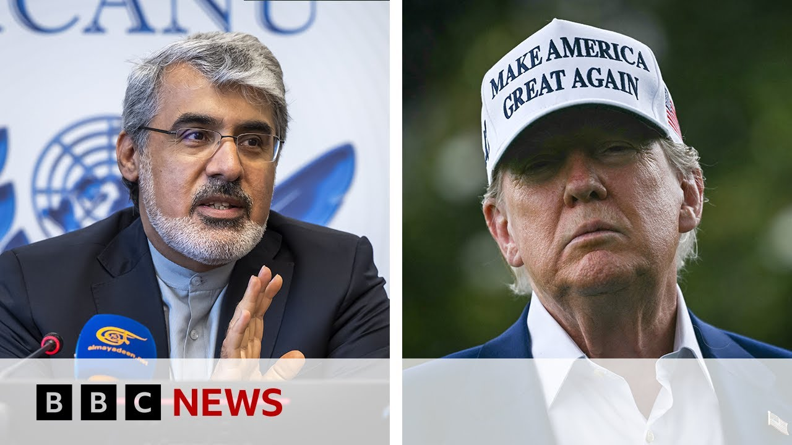

【伊朗将对美国的攻击“毫不犹豫”地作出反应，该国驻联合国大使表示 | BBC新闻】
Summary: Ali Bahreini, the Iranian ambassador to the United Nations, said Iran would react without "reluctance" if the US attacked, and accused the US of being “complicit in this crime from the beginning” regarding Israeli strikes; earlier, Donald Trump said "I may do it, I may not do it" about joining Israeli attacks, adding "Iran's got a lot of trouble and wants to negotiate", as Israel and Iran have exchanged numerous deadly strikes since Friday.
摘要： 伊朗驻联合国大使阿里·巴赫雷尼表示，若美国发动攻击，伊朗将“毫不犹豫”做出回应，并指责美国“从一开始就在这一罪行中扮演同谋角色”；此前，唐纳德·特朗普在被问及是否会加入以色列对伊朗的袭击时表示：“我可能会，也可能不会”，并补充说：“伊朗现在麻烦很多，想要谈判”，自上周五以来，以色列和伊朗已多次互相发动致命袭击。

⏱️ Estimated Reading Time: 14 min
📚 六级生词 📚 雅思生词 📚 托福生词 📚 专八生词 📚 SAT生词 📚 考研生词 📚 GRE生词 📚 高考生词
Well, now live on BBC News, we can get the perspective of the Iranian authorities because joining us live is Iran's ambassador and permanent representative to the United Nations in Geneva, that's Ali Bahini.
现在我们正在BBC新闻直播，可以听到伊朗当局的观点，因为伊朗驻联合国日内瓦大使兼常驻代表阿里·巴希尼正在与我们连线。
Thank you very much indeed for joining us on BBC News.
非常感谢您加入BBC新闻的直播。
Can I ask you um first of all, if President Trump and the United States do decide to attack Iran, how will Iran respond?
首先，我想请问，如果特朗普总统和美国决定攻击伊朗，伊朗将如何回应？
We believe that um the aggression made by Israel against Iran from the beginning has been with the approval of the United States and United States is complicit to this crime from the beginning.
我们认为，以色列对伊朗的侵略从一开始就得到了美国的批准，美国从一开始就是这一罪行的共犯。
But we will react in accordance with the with our assessment.
但我们将根据我们的评估作出反应。
Definitely if United States is going to involve in the aggression against Iran, it will receive firm and resolute response.
如果美国参与对伊朗的侵略，它必将受到坚定而坚决的回应。
Iran will show no any doubt, no any hesitation, no any reluctance in defending the people, in defending our integrity, in defending our country and in defending the humanity because what we are doing is to defend international law to defend humanity.
伊朗在保卫人民、捍卫国家完整、保卫国家和捍卫人道主义方面不会有任何怀疑、犹豫或勉强，因为我们的行动是为了捍卫国际法和人道主义。
Our military forces are moni are monitoring the activities of the United States and there is a red line set for the United States.
我们的军事力量正在监视美国的行动，并为美国设定了红线。
If United States cross that line, the response will come.
如果美国越过这条红线，回应将会到来。
Well, you talk about a response, but I mean your military has been devastated by these Israeli attacks.
您提到了回应，但我想说的是，你们的军事力量已经被以色列的攻击摧毁。
Your air force has been destroyed.
你们的空军已被摧毁。
Your air defenses have been destroyed.
你们的防空系统已被摧毁。
You're running out of missiles.
你们的导弹即将耗尽。
So militarily, how can you respond?
那么，在军事上，你们如何回应？
How could you respond to the United States, which is the supreme military superpower in the world?
你们如何回应世界上军事超级大国美国？
It's not true.
这不是事实。
If if you follow the developments nowadays, today, the day, yesterday, the the day before yesterday, you can realize that Iranian military forces are responding very efficiently.
如果您关注近几天的事态发展，您会发现伊朗军事力量的回应非常高效。
If it is not efficient, please ask Israel to stop the censorship in in the in the land so that the people can can witness and can see what has happened to Israel by the responses given by our military forces.
如果不够高效，请要求以色列停止在其领土上的审查，以便人们能够亲眼目睹我们的军事力量对以色列造成的打击。
Our military forces have been prepared for this scenario.
我们的军事力量已经为这一情况做好了准备。
It is not a new thing because we have lived with the Israeli threats and our military forces have been prepared for such a situation.
这并不是新鲜事，因为我们一直生活在以色列的威胁之下，我们的军事力量已经为此类情况做好了准备。
Therefore, our military reforce military forces have responded and will continue to respond very efficiently and as far as it is needed and we will come to the point that we make sure that our people are secure, our land is secure and the aggression is stopped.
因此，我们的军事力量已经作出回应，并将继续高效地回应，直到确保我们的人民安全、国土安全并阻止侵略。
We will do it.
我们一定会做到。
What what about the possibility of negotiating a way out of this?
那么，通过谈判解决这一问题的可能性如何？
I mean, President Trump has said that Iranian officials have asked to come to the White House for talks.
我是说，特朗普总统称伊朗官员曾要求前往白宫进行谈判。
What about that?
对此您怎么看？
Would would Iran be prepared to talk to the United States?
伊朗是否准备好与美国谈判？
Maybe even go to the White House for talks?
甚至前往白宫谈判？
I think it would not be appropriate at the moment to think about anything rather than defending our people and our country.
我认为，目前除了保卫我们的人民和国家之外，考虑其他任何事情都不合适。
Now the first priority for us is to defend ourselves and to stop aggression and to stop attacks.
目前我们的首要任务是自卫、阻止侵略和攻击。
I think it shouldn't be appropriate at this time to talk about these initiatives.
我认为现在讨论这些倡议并不合适。
The first thing which our people are demanding our government, our military forces to do is first to stop aggression and to punish Israel.
我们的人民要求政府、军事力量做的第一件事是阻止侵略并惩罚以色列。
And that is something that we are focused on now.
这是我们目前关注的重点。
This is all about Iran trying to build a nuclear bomb.
这一切都是关于伊朗试图制造核弹的说法。
That's what Israel says.
这是以色列的说法。
Are you trying to build a nuclear bomb?
你们是否在试图制造核弹？
Yes or no?
是或不是？
No.
不是。
But the International Atomic Energy Agency, you will know this.
但国际原子能机构，您应该知道这一点。
Uh they said just a few days ago that you were in breach of your non-prololiferation obligations.
他们几天前表示，你们违反了防扩散义务。
IAEA reports have not said such a thing.
国际原子能机构的报告并未提到这一点。
If you follow the statements made by the director general of IAA yesterday, he clearly explained that there is no evidence that Iran is following a nuclear a military nuclear program or activity.
如果您关注国际原子能机构总干事昨天的声明，他明确表示没有证据表明伊朗在从事军事核计划或活动。
Different reports give evidence and shows that Iran is following only a peaceful program.
不同的报告提供了证据，表明伊朗仅在进行和平计划。
uh nuclear program and there is no evidence that Iran is following a a military nuclear program and I think there is a criteria there is an organization to verify that there is a mechanism to explain for everybody that what Iran is doing our nuclear facilities which have unfortunately been attacked by Israeli regime are very peaceful This is a new red line crossed by Israel by attacking our nuclear facilities.
核计划，且没有证据表明伊朗在进行军事核计划。我认为有一个标准、一个组织来验证这一点，也有一个机制向所有人解释伊朗的行动。不幸的是，我们的核设施遭到以色列政权的攻击，这些设施非常和平。以色列攻击我们的核设施是越过了一条新的红线。
I'm thinking always I'm asking always myself is there any new red line that Israel will will cross?
我一直在思考，一直在问自己，以色列还会越过哪些新的红线？
And unfortunately the uh answer has always been yes.
不幸的是，答案总是肯定的。
Israel has become an exception an exception to the respect of international law.
以色列已成为国际法尊重的一个例外。
Everybody's requested to respect international law except Israel.
除了以色列，所有人都被要求尊重国际法。
Well, what about what about when you talk about respecting international law?
那么，当您谈到尊重国际法时，
Iran sponsors Hamas, which attacked Israel on October the 7th.
伊朗支持哈马斯，哈马斯在10月7日袭击了以色列。
We know that with deadly consequences.
我们知道这造成了致命的后果。
Iran sponsors Hezbollah in Lebanon.
伊朗支持黎巴嫩的真主党。
Iran sponsors the Houthis that's been attacking Israel as well.
伊朗还支持胡塞武装，他们也在攻击以色列。
you and and you have called you have said death to Israel, death to United States year after year.
你们年复一年地高喊“以色列去死”、“美国去死”。
Hamasah Hamas and Hezbollah are protecting their land.
哈马斯和真主党是在保护他们的土地。
They are fighting for the freedom of their land.
他们为争取自己土地的自由而战。
Israel is an occupier and Hamas is fighting to end the occupation.
以色列是占领者，哈马斯正在为结束占领而战。
It is their right to fight for that and it is our responsibility and the responsibility of everybody to support them in order to end the occupation.
这是他们的权利，也是我们和所有人的责任，支持他们以结束占领。
Israel should end the occupation and Israeli Israeli supporters should make it to end the occupation.
以色列应该结束占领，以色列的支持者也应该促成这一点。
And we believe that uh Israel uh Israel is a criminal is the source of insecurity in our region is an absolute evil in our region and it should be it should be stopped from committing crimes again and again.
我们认为，以色列是罪犯，是我们地区不安全的根源，是我们地区的绝对邪恶，必须阻止它一再犯罪。
Do you understand though why Israel doesn't want you to have the nuclear bomb when you say time and again death to Israel when you sponsor Hamas and its attacks on Israel and the evidence is that Iran has enriched 400 kg of uranium to 60% and that is not far off the 90% that is needed for a nuclear bomb.
但您是否理解，为什么以色列不希望你们拥有核弹？当你们一再高喊“以色列去死”，支持哈马斯及其对以色列的攻击，而且有证据表明伊朗已将400公斤铀浓缩至60%，这与制造核弹所需的90%相差不远。
So do you understand those concerns?
那么，您理解这些担忧吗？
Wherever and whenever there has been an announcement about a new nuclear activity in Iran, there has been a technical explanation by our authorities.
无论何时何地，只要伊朗宣布新的核活动，我们的当局都会提供技术解释。
There has been enough arguments to explain that these activities are necessary for economic, technological, and peaceful purposes.
有足够的论据表明，这些活动是出于经济、技术和和平目的的必要之举。
Whatever nuclear activity Iran has conducted has been in line with fulfilling the welfare of our people.
伊朗进行的任何核活动都是为了满足我们人民的福祉。
And the fact is that we cannot re rely on others to be provided with our technological necessity.
事实是，我们不能依赖他人来满足我们的技术需求。
The experience the recent history has showed us that you shouldn't rely on anybody.
最近的历史经验告诉我们，不应依赖任何人。
The behavior of the aggressors, the supporters of Israel showed us during the war imposed by Saddam against us that they are complicit to crimes.
侵略者和以色列支持者在萨达姆强加给我们的战争中的行为表明，他们是罪行的共犯。
Their behavior during the COVID 19 showed that they are avoiding providing health equipments and medicine to other countries.
他们在COVID-19期间的行为表明，他们不愿向其他国家提供医疗设备和药品。
We have learned to be independent to rely on ourselves and therefore our nuclear activities peaceful nuclear activities are in line with our economic uh development.
我们学会了独立自主，因此我们的核活动——和平核活动——符合我们的经济发展。
You say that you are defending the people of Iran.
您说你们是在保卫伊朗人民。
The people of Iran hate your government, don't they?
伊朗人民憎恨你们的政府，不是吗？
Many many hundreds of thousands of ordinary Iranians absolutely despise your government.
成千上万的普通伊朗人绝对鄙视你们的政府。
They fear your government.
他们害怕你们的政府。
But they have been out onto the streets.
但他们曾走上街头。
Two years ago, we saw mass protests against your government after the arrest and the death of Master Amini for not covering her head properly with a headscarf.
两年前，阿米尼因未正确佩戴头巾被捕并死亡后，我们看到了针对你们政府的大规模抗议。
If you follow the developments in our country, you can observe the solidarity shown by our people nowadays.
如果您关注我们国家的事态发展，您可以看到我们人民如今展现的团结。
Even those who do not like the policies of our government, Iranians, they are approaching to us and telling us that we are ready to support the government.
即使是那些不喜欢我们政府政策的伊朗人，他们也在接近我们，告诉我们他们准备支持政府。
We are ready to do everything to secure our country to defend our country.
我们准备尽一切努力保卫我们的国家。
If all that is true, if all that and unity shown by our people at this moment is unprecedented and is very strong.
如果这一切是真的，如果我们人民此刻展现的团结是前所未有的、非常强大的。
If all that is true, why don't you let journalists, independent journalists like the BBC, like other news organizations come to Iran to see that for them for themselves?
如果这一切是真的，为什么你们不让记者，像BBC这样的独立记者，或其他新闻机构来伊朗亲眼看看？
Iran is a is an open society.
伊朗是一个开放的社会。
You talked about journalists.
您提到了记者。
Let me refer to the attack which was made by Israel against our national broadcasting headquarters the day before yesterday.
让我提到以色列前天对我们国家广播总部的攻击。
They destroyed the the headquarter.
他们摧毁了总部。
They killed three Iranian journalists and that is a big violation of the freedom of expression committed by Israel and supported by you.
他们杀害了三名伊朗记者，这是以色列犯下的对言论自由的重大侵犯，并得到了你们的支持。
Ali Bahini, we're out of time, but thank you very much indeed for joining us.
阿里·巴希尼，我们的时间到了，非常感谢您加入我们。
that is Iran's ambassador and permanent representative to the United Nations in Geneva.
这是伊朗驻联合国日内瓦大使兼常驻代表。
Thank you for being with us on BBC News.
感谢您参加BBC新闻。
Thank you for having me.
谢谢邀请。